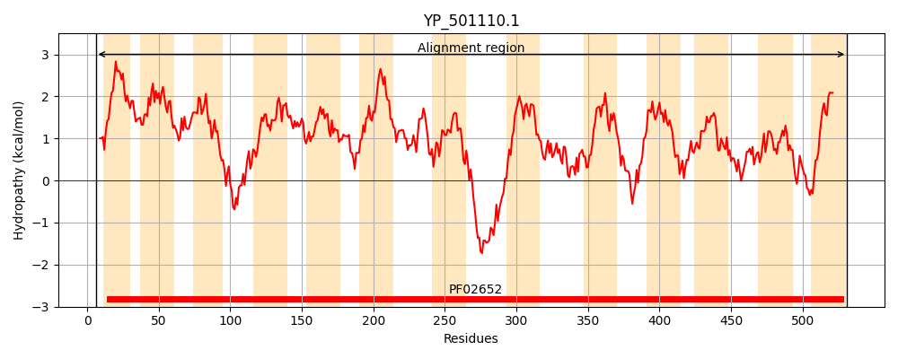
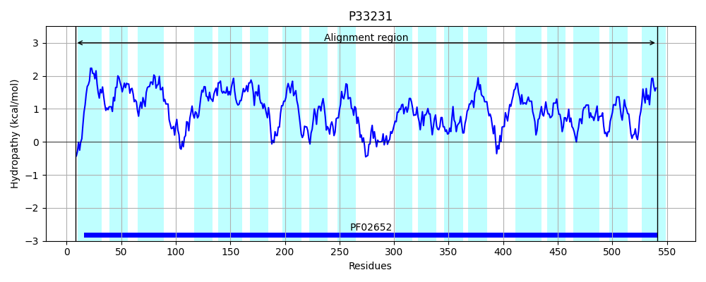
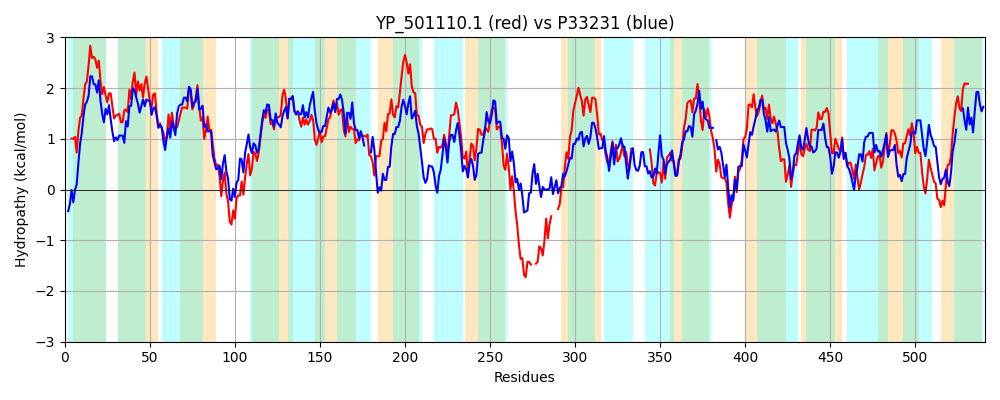

Hit Accession: P33231
Hit TCID: 2.A.14.1.1
Hit Description: gnl|BL_ORD_ID|9896 gnl|TC-DB|P33231|2.A.14.1.1 L-LACTATE PERMEASE - Escherichia coli.
Mach Len: 541
e:0.000000
Query TMS Count : 13
Hit TMS Count: 18
TMS-Overlap Score: 11.200000
Predicted Substrates:CHEBI:29805;glycolate, CHEBI:24996;lactate
BLAST Alignment:
Score: 1097 , Bit scores: 427 bits, E-value: 1.1e-144, Alignment length: 541, Percentage identity: 45
Query: 6 FNPFDNLLLSSLIAAIPIVLFLLCLTVFKMKGIYAAITTLVVTLLIAIPFFKLPVGIASGAVVEGFFQGIIPIGYIVMMAVLLYKITVESGQFLTIQDSITNISQDQRIQVLLIGFAFNAFLEGAAGFGVPIAICALLLTQLGFNPLKAAMLCLVANAASGAFGAIGIPVGVVETLKLPGDVSVLGVSQSATLTLAIINFIIPFLLIFIIDGFRGVKETLPAILVVSITYTLTQGLLTVFSGPELADIIPPLLTMLALAVFSKKFQPKHIYRVNK--DEEIEPAKAH---SAKAVLHAWSPFIVLTVIVMIWSAPFFKNLFLPNGALSSLVFKF----------NLPGTISEVTHKPLVLTLNIIGQTGTAILLTIIITILMSKKVNFKDAGRLFGVTFKELWLPVLTICFILAISKITTYGGLSAAMGQGIAKAGNVFPVLSPILGWIGVFMTGSVVNNNSLFAPIQASVAQQIGTSGSLLVSANTVGGVAAKLISPQSIAIATAAVKQVGKESELLKMTLKYSVCLLIFICIWTFILSL 531
++P N+ LSSLIA++PI+ F L K+KG AA T+ + L +A+ F+K+PV A +VV GFF G+ PI +I++ AV +YKI+V++GQF I+ SI +I+ DQR+Q+L++GF F AFLEGAAGFG P+AI A LL LGF PL AA LCL+ N A AFGA+GIP+ V + + + Q L + I+ F ++ I+DG+RG+KET PA++V ++ + Q L + F GPEL DII L+++L L +F K++QP ++R +++ AH +A VL AW+PF+ LT V +WS P FK LF GAL V +P +SE T V + TGTAIL +++I+ K+ DA FG T KEL LP+ +I +LA + I+ Y GLS+ + +A G+ F SP LGW+GVF+TGS ++N+LFA +QA+ AQQIG S LLV+ANT GGV K+ISPQSIAIA AAV VGKES+L + T+K+S LIF CI I +L
Sbjct: 8 YDPAGNIWLSSLIASLPILFFFFALIKLKLKGYVAASWTVAIALAVALLFYKMPVANALASVVYGFFYGLWPIAWIIIAAVFVYKISVKTGQFDIIRSSILSITPDQRLQMLIVGFCFGAFLEGAAGFGAPVAITAALLVGLGFKPLYAAGLCLIVNTAPVAFGAMGIPILVAGQVT---GIDSFEIGQMVGRQLPFMTIIVLFWIMAIMDGWRGIKETWPAVVVAGGSFAIAQYLSSNFIGPELPDIISSLVSLLCLTLFLKRWQPVRVFRFGDLGASQVDMTLAHTGYTAGQVLRAWTPFLFLTATVTLWSIPPFKALFASGGALYEWVINIPVPYLDKLVARMPPVVSEATAYAAVFKFDWFSATGTAILFAALLSIVW-LKMKPSDAISTFGSTLKELALPIYSIGMVLAFAFISNYSGLSSTLALALAHTGHAFTFFSPFLGWLGVFLTGSDTSSNALFAALQATAAQQIGVSDLLLVAANTTGGVTGKMISPQSIAIACAAVGLVGKESDLFRFTVKHS---LIFTCIVGVITTL 541 | Protein Hydropathy Plots: |
|---|
|  |  |
Pairwise Alignment-Hydropathy Plot:
|
|---|
|  |